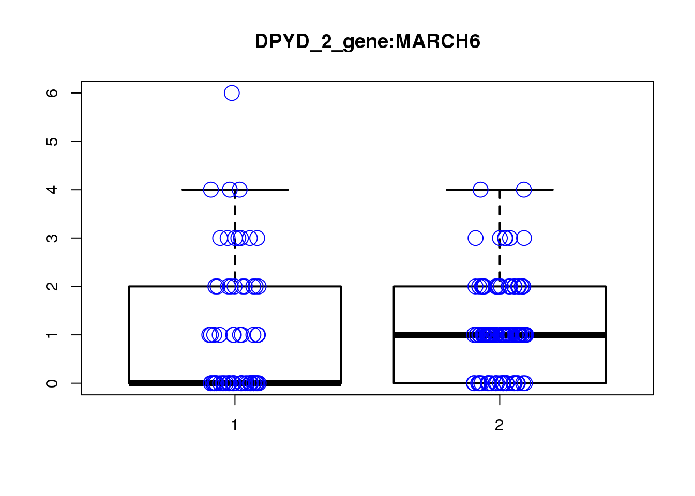
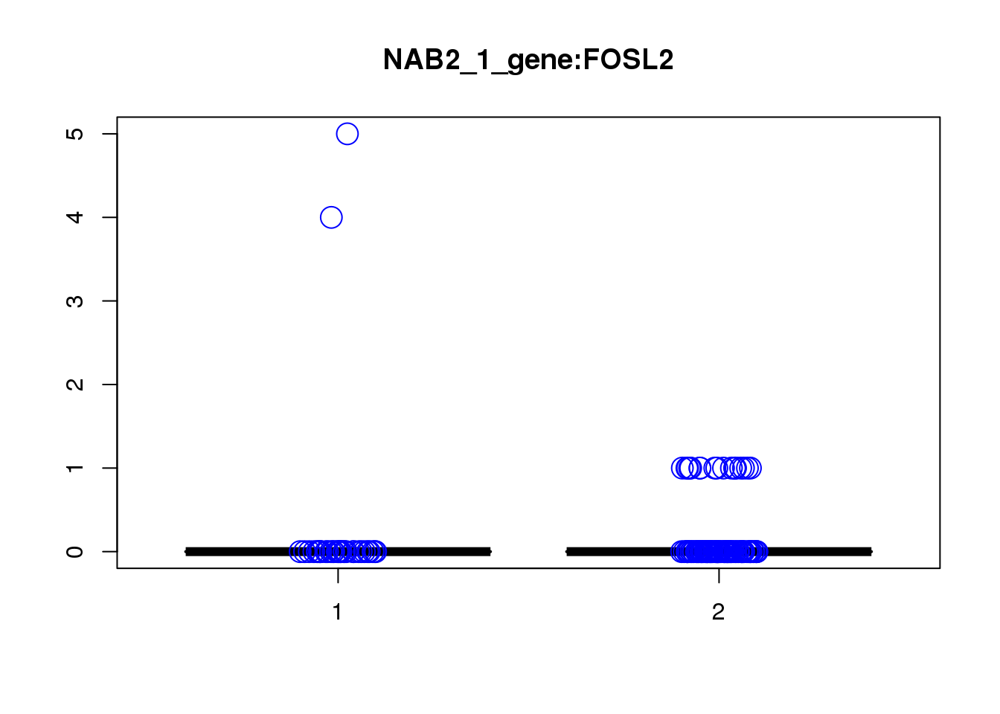

Last updated: 2019-03-27
Checks: 5 1
Knit directory: cropseq/
This reproducible R Markdown analysis was created with workflowr (version 1.2.0). The Report tab describes the reproducibility checks that were applied when the results were created. The Past versions tab lists the development history.
The R Markdown is untracked by Git. To know which version of the R Markdown file created these results, you’ll want to first commit it to the Git repo. If you’re still working on the analysis, you can ignore this warning. When you’re finished, you can run wflow_publish to commit the R Markdown file and build the HTML.
Great job! The global environment was empty. Objects defined in the global environment can affect the analysis in your R Markdown file in unknown ways. For reproduciblity it’s best to always run the code in an empty environment.
The command set.seed(20181119) was run prior to running the code in the R Markdown file. Setting a seed ensures that any results that rely on randomness, e.g. subsampling or permutations, are reproducible.
Great job! Recording the operating system, R version, and package versions is critical for reproducibility.
Nice! There were no cached chunks for this analysis, so you can be confident that you successfully produced the results during this run.
Great! You are using Git for version control. Tracking code development and connecting the code version to the results is critical for reproducibility. The version displayed above was the version of the Git repository at the time these results were generated.
Note that you need to be careful to ensure that all relevant files for the analysis have been committed to Git prior to generating the results (you can use wflow_publish or wflow_git_commit). workflowr only checks the R Markdown file, but you know if there are other scripts or data files that it depends on. Below is the status of the Git repository when the results were generated:
Ignored files:
Ignored: .Rproj.user/
Ignored: analysis/Quality_metrics_cache/
Ignored: analysis/figure/MASTcpmdet.Rmd/
Ignored: analysis/figure/gRNA-EdgeR-QLF.Rmd/
Ignored: analysis/figure/gRNA-EdgeR-QLF_permutation.Rmd/
Ignored: analysis/figure/gRNA-MASTcpmdet.Rmd/
Ignored: data/gRNA_MASTcpmdet/
Ignored: data/gRNA_edgeR-QLF/
Ignored: data/gRNA_edgeR-QLF_811d97b/
Ignored: data/gRNA_edgeR-QLF_fba9768/
Untracked files:
Untracked: analysis/enrichment_gRNA-MASTcpmdet.Rmd
Untracked: analysis/gRNA-MASTcpmdet.Rmd
Untracked: code/gRNA_MASTcpmdet_run.R
Untracked: docs/figure/gRNA-MASTcpmdet.Rmd/
Unstaged changes:
Modified: analysis/enrichment_gRNA-EdgeR-QLF_permutation.Rmd
Modified: analysis/index.Rmd
Note that any generated files, e.g. HTML, png, CSS, etc., are not included in this status report because it is ok for generated content to have uncommitted changes.
There are no past versions. Publish this analysis with wflow_publish() to start tracking its development.
This summarizes results obtained from running module load R; Rscript code/gRNA_MASTcpmdet_run.R from shell.
library(Matrix)
load("data/DE_input.Rd")
source("code/summary_functions.R")
gRNAdm0 <- dm[(dim(dm)[1]-75):dim(dm)[1],]for (gRNAfile in list.files("data/gRNA_MASTcpmdet/", "*MASTcpmdet_Neg1.Rd")){
print(gRNAfile)
gRNA <- strsplit(gRNAfile, "_MAST")[[1]][1]
gRNAlocus <- strsplit(gRNA, split = "_")[[1]][1]
load(paste0("data/gRNA_MASTcpmdet/", gRNAfile))
print(signif(head(res1,n=10),2))
plotgn <- rownames(res1[,][res1[,"fdr"] <0.2,])
if (length(plotgn)!=0){
summ_pvalues(res1$pval)
for (gn in plotgn){
gcount <- dm[gn, gRNAdm0[gRNA,] >0 & colSums(gRNAdm0[rownames(gRNAdm0) != gRNA,]) == 0]
ncount1 <- dm[gn, colnames(dm1dfagg)[dm1dfagg["neg",] >0 & nlocus==1]]
a <- rbind(cbind(gcount,1),cbind(ncount1,2))
colnames(a) <- c("count","categ")
boxplot(count ~categ, data = a, lwd = 2, main=paste(gRNA, gn, sep=":"), outcol="white")
stripchart(count ~categ, data=a, vertical = TRUE, method = "jitter", add = TRUE, pch = 21, cex=2, col = 'blue')
}
}
}[1] "BAG5_1_gene_MASTcpmdet_Neg1.Rd"
pval fdr logFC varLogFC z
DCLK2 0.00011 1 0.74 0.16 1.9
ARAF 0.00012 1 -2.10 0.27 -4.1
EPHX2 0.00050 1 NaN NaN NaN
BAZ2B 0.00062 1 2.00 0.27 3.8
LARP1 0.00075 1 2.10 0.38 3.4
DPH3 0.00082 1 -1.20 0.11 -3.5
FSCN1 0.00120 1 0.99 0.27 1.9
PUM3 0.00150 1 -1.80 0.26 -3.5
CWF19L2 0.00160 1 -1.50 0.33 -2.7
HEXIM1 0.00170 1 -1.80 0.33 -3.1
[1] "BAG5_2_gene_MASTcpmdet_Neg1.Rd"
pval fdr logFC varLogFC z
NDFIP2 0.00013 1 0.20 0.330 0.35
MLLT6 0.00028 1 NaN NaN NaN
BAG1 0.00037 1 -0.94 0.056 -4.00
CHCHD2 0.00056 1 -1.60 0.220 -3.50
MT2A 0.00060 1 1.60 0.290 3.10
PLD5 0.00078 1 NaN NaN NaN
SACS 0.00080 1 -0.40 0.300 -0.73
EPN2 0.00089 1 -1.70 0.300 -3.10
RP11-16E18.4 0.00110 1 NaN NaN NaN
ARFGAP1 0.00130 1 -2.00 0.290 -3.80
[1] "BAG5_3_gene_MASTcpmdet_Neg1.Rd"
pval fdr logFC varLogFC z
MAP2K7 0.00011 1 -1.90 0.200 -4.4
EPS8L1 0.00023 1 -2.00 0.320 -3.6
RPF1 0.00033 1 2.20 0.480 3.1
NDUFS3 0.00046 1 0.91 0.140 2.4
TSPAN6 0.00053 1 -1.40 0.092 -4.5
TMEM27 0.00062 1 NaN NaN NaN
MED4 0.00082 1 1.50 0.310 2.8
ETV5 0.00110 1 -1.10 0.190 -2.6
MTFR1L 0.00130 1 -1.20 0.130 -3.3
DHCR24 0.00150 1 1.10 0.510 1.5
[1] "BCL11B_1_gene_MASTcpmdet_Neg1.Rd"
pval fdr logFC varLogFC z
PVT1 0.00011 1 -0.61 0.86 -0.66
NR6A1 0.00037 1 0.84 0.37 1.40
PPM1E 0.00037 1 -2.00 0.54 -2.80
MLXIP 0.00056 1 NaN NaN NaN
RCOR3 0.00088 1 -0.56 0.68 -0.68
CTNNBL1 0.00092 1 2.40 1.10 2.30
PTPN18 0.00110 1 NaN NaN NaN
TGFB1I1 0.00130 1 -2.70 0.77 -3.10
GLE1 0.00160 1 NaN NaN NaN
GPSM2 0.00160 1 -0.27 0.66 -0.34
[1] "BCL11B_2_gene_MASTcpmdet_Neg1.Rd"
pval fdr logFC varLogFC z
IGDCC3 6.6e-05 1 1.20 0.110 3.60
VOPP1 1.5e-04 1 2.20 0.360 3.70
CACYBP 1.7e-04 1 1.20 0.150 3.10
DNAJC9 2.3e-04 1 2.10 0.350 3.50
CCP110 2.7e-04 1 1.40 0.100 4.50
NT5M 2.8e-04 1 NaN NaN NaN
SNU13 3.3e-04 1 0.55 0.017 4.20
CNTNAP2 3.8e-04 1 0.15 0.410 0.23
HSCB 3.9e-04 1 -2.00 0.180 -4.80
SCML1 4.0e-04 1 2.10 0.200 4.70
[1] "BCL11B_3_gene_MASTcpmdet_Neg1.Rd"
pval fdr logFC varLogFC z
ZFY 3.1e-05 0.92 -2.400 0.54 -3.300
AHDC1 1.9e-04 1.00 -2.900 0.56 -3.800
CCDC151 3.4e-04 1.00 NaN NaN NaN
UFL1 4.6e-04 1.00 -0.030 0.77 -0.034
WDR13 8.4e-04 1.00 -2.300 0.16 -5.700
GOLGA7 9.4e-04 1.00 2.000 0.66 2.500
S100A4 1.0e-03 1.00 -0.023 0.35 -0.039
ARL4C 1.2e-03 1.00 -2.300 0.19 -5.200
FAAP20 1.4e-03 1.00 1.600 0.48 2.300
MYCL 1.6e-03 1.00 -0.980 0.78 -1.100
[1] "CHRNA3_1_gene_MASTcpmdet_Neg1.Rd"
pval fdr logFC varLogFC z
AC084018.1 1.9e-06 0.055 -4.6 1.2 -4.1
PHAX 4.6e-04 1.000 4.4 1.3 4.0
ABHD17A 9.1e-04 1.000 -3.4 1.6 -2.7
PREPL 9.5e-04 1.000 -1.9 3.6 -1.0
ARID1B 9.7e-04 1.000 -3.2 1.2 -2.9
RP11-419C5.1 1.1e-03 1.000 NaN NaN NaN
DCLK1 1.4e-03 1.000 -2.3 3.6 -1.2
USP48 2.2e-03 1.000 NaN NaN NaN
SEC62 2.8e-03 1.000 2.8 2.4 1.8
HABP4 3.2e-03 1.000 NaN NaN NaN[1] "CHRNA3_2_gene_MASTcpmdet_Neg1.Rd"
pval fdr logFC varLogFC z
PRKAR1A 0.00013 1 -0.66 0.330 -1.20
TOP3A 0.00017 1 NaN NaN NaN
ARFGAP3 0.00025 1 1.90 0.150 4.90
MAP3K1 0.00047 1 NaN NaN NaN
EDEM3 0.00048 1 -2.00 0.350 -3.30
C1orf21 0.00049 1 0.38 0.590 0.50
PSRC1 0.00050 1 2.10 0.700 2.50
NPPC 0.00120 1 0.26 0.480 0.37
IER5L 0.00120 1 -1.50 0.310 -2.70
RABL6 0.00120 1 0.42 0.056 1.80
[1] "CHRNA3_3_gene_MASTcpmdet_Neg1.Rd"
pval fdr logFC varLogFC z
OXR1 0.00013 1 NaN NaN NaN
TMEM98 0.00034 1 2.8 1.30 2.4
TTC28 0.00043 1 NaN NaN NaN
RRP9 0.00046 1 -2.6 0.19 -5.8
CBWD1 0.00072 1 -2.4 0.57 -3.2
A1BG 0.00082 1 NaN NaN NaN
SREBF2 0.00082 1 -2.4 0.19 -5.7
ATP2A1 0.00095 1 NaN NaN NaN
NUP98 0.00120 1 -2.1 0.81 -2.3
NEDD4L 0.00150 1 NaN NaN NaN
[1] "DPYD_1_gene_MASTcpmdet_Neg1.Rd"
pval fdr logFC varLogFC z
C3orf52 2.5e-05 0.73 NaN NaN NaN
RHNO1 8.8e-05 1.00 1.80 0.30 3.20
ICAM3 1.9e-04 1.00 NaN NaN NaN
KIAA1143 1.9e-04 1.00 -0.42 0.27 -0.81
TAF1C 3.2e-04 1.00 NaN NaN NaN
CROCC 3.3e-04 1.00 NaN NaN NaN
ALDH5A1 4.7e-04 1.00 NaN NaN NaN
NTRK2 6.3e-04 1.00 2.20 0.33 3.80
TLE4 6.8e-04 1.00 -1.90 0.21 -4.30
FASN 7.0e-04 1.00 1.30 0.29 2.50
[1] "DPYD_2_gene_MASTcpmdet_Neg1.Rd"
pval fdr logFC varLogFC z
MARCH6 2.3e-06 0.07 1.40 0.210 2.9
ARAF 9.2e-05 1.00 -1.80 0.170 -4.3
NLRX1 1.3e-04 1.00 NaN NaN NaN
PCM1 2.4e-04 1.00 -0.37 0.059 -1.5
FAM155A 2.5e-04 1.00 NaN NaN NaN
AKAP9 4.8e-04 1.00 -1.30 0.120 -3.8
PGGT1B 5.2e-04 1.00 -1.40 0.160 -3.5
APLP1 6.2e-04 1.00 -0.90 0.074 -3.3
ENPP1 6.4e-04 1.00 0.50 0.034 2.7
ABCD4 8.7e-04 1.00 -0.94 0.190 -2.2
[1] "DPYD_3_gene_MASTcpmdet_Neg1.Rd"
pval fdr logFC varLogFC z
SERINC2 6.9e-05 1 2.400 0.29 4.50
ID1 1.2e-04 1 0.470 0.46 0.70
SWSAP1 1.7e-04 1 0.072 0.23 0.15
LIX1L 4.9e-04 1 -0.820 0.45 -1.20
CCNF 5.5e-04 1 0.690 0.18 1.60
ATE1 5.8e-04 1 0.054 0.25 0.11
AFF3 6.6e-04 1 NaN NaN NaN
ITGA6 8.2e-04 1 -1.700 0.31 -3.00
AES 8.8e-04 1 -0.690 0.16 -1.70
NBPF20 9.3e-04 1 NaN NaN NaN
[1] "GALNT10_1_gene_MASTcpmdet_Neg1.Rd"
pval fdr logFC varLogFC z
PI4K2A 0.00019 1 -1.4 0.210 -3.20
PRKAR1A 0.00036 1 -1.1 0.077 -4.10
ID4 0.00052 1 2.1 0.400 3.30
CCDC50 0.00059 1 -1.7 0.180 -3.90
ZNF462 0.00061 1 0.2 0.240 0.42
JAG1 0.00072 1 1.3 0.310 2.40
PGLS 0.00083 1 0.6 0.160 1.50
CHST1 0.00095 1 NaN NaN NaN
CCM2 0.00100 1 1.0 0.380 1.70
ASH2L 0.00100 1 -1.8 0.220 -3.80
[1] "GALNT10_2_gene_MASTcpmdet_Neg1.Rd"
pval fdr logFC varLogFC z
FZD3 0.00021 1 -0.910 0.050 -4.10
VDAC3 0.00026 1 -0.065 0.120 -0.19
ST7L 0.00028 1 -2.000 0.290 -3.80
YWHAG 0.00048 1 -1.100 0.084 -3.60
SCD5 0.00064 1 1.300 0.190 3.00
DRD4 0.00068 1 -0.660 0.100 -2.10
ZNF519 0.00110 1 0.880 0.140 2.30
UFSP1 0.00130 1 NaN NaN NaN
FBXL5 0.00140 1 1.700 0.250 3.40
C3orf52 0.00150 1 NaN NaN NaN
[1] "GALNT10_3_gene_MASTcpmdet_Neg1.Rd"
pval fdr logFC varLogFC z
EML1 0.00013 1 1.500 0.098 4.90
SND1-IT1 0.00018 1 -1.200 0.130 -3.50
ZNF512 0.00029 1 -1.900 0.210 -4.10
EIF1B 0.00035 1 0.510 0.110 1.60
RGS5 0.00037 1 -0.390 0.280 -0.73
BEND3 0.00037 1 NaN NaN NaN
KCNH2 0.00061 1 NaN NaN NaN
DTNA 0.00067 1 1.000 0.130 2.90
GPATCH2 0.00073 1 -0.081 0.230 -0.17
GPD2 0.00083 1 NaN NaN NaN
[1] "KCTD13_1_gene_MASTcpmdet_Neg1.Rd"
pval fdr logFC varLogFC z
SLC25A39 2.2e-05 0.67 0.24 0.110 0.74
ARMC1 2.3e-04 1.00 -2.00 0.160 -5.10
TBC1D17 3.5e-04 1.00 1.00 0.110 3.10
GNG10 4.6e-04 1.00 1.00 0.092 3.40
EFHD1 6.0e-04 1.00 NaN NaN NaN
GNG5 6.3e-04 1.00 0.46 0.016 3.60
SND1-IT1 7.3e-04 1.00 -1.30 0.230 -2.80
SLC35E2B 7.9e-04 1.00 NaN NaN NaN
TUBA1C 8.7e-04 1.00 1.70 0.120 5.00
LMNA 9.3e-04 1.00 2.10 0.380 3.50
[1] "KCTD13_2_gene_MASTcpmdet_Neg1.Rd"
pval fdr logFC varLogFC z
RP3-400N23.9 0.00042 1 -1.1 0.17 -2.80
AK4 0.00095 1 -1.9 0.34 -3.20
PEMT 0.00150 1 -1.3 0.16 -3.30
TCP1 0.00160 1 0.1 0.13 0.28
BACE2 0.00180 1 -1.2 0.31 -2.20
SH3GL1 0.00200 1 -1.1 0.11 -3.50
ZNF75A 0.00210 1 -1.8 0.26 -3.50
PGLS 0.00220 1 0.5 0.13 1.40
DPH3 0.00230 1 -1.4 0.12 -4.00
ZNF608 0.00240 1 1.0 0.34 1.70
[1] "KCTD13_3_gene_MASTcpmdet_Neg1.Rd"
pval fdr logFC varLogFC z
SPTLC1 3.6e-05 1 -2.800 0.160 -6.900
VPS33B 1.3e-04 1 -0.260 0.650 -0.320
MARCH6 2.0e-04 1 0.950 0.900 1.000
MED10 2.3e-04 1 1.300 1.000 1.300
TCF12 2.6e-04 1 0.018 1.000 0.017
GOLGB1 3.8e-04 1 -3.000 0.300 -5.600
PPIL2 3.8e-04 1 NaN NaN NaN
RPS4Y1 4.0e-04 1 0.910 0.084 3.200
EPS8L1 4.5e-04 1 -2.700 0.540 -3.700
HAUS7 4.6e-04 1 0.730 0.890 0.770
[1] "KMT2E_1_gene_MASTcpmdet_Neg1.Rd"
pval fdr logFC varLogFC z
PRPF4B 0.00028 1 2.700 0.82 3.00
CEP41 0.00030 1 0.063 1.10 0.06
EXOC6 0.00036 1 -3.300 0.50 -4.60
ROGDI 0.00068 1 -2.400 0.32 -4.20
USP47 0.00084 1 2.800 0.48 4.10
TNFRSF13C 0.00100 1 -1.200 0.45 -1.70
SLC52A2 0.00120 1 -1.300 0.17 -3.30
CCDC149 0.00130 1 -2.000 0.63 -2.50
EXOC4 0.00160 1 -0.290 0.86 -0.31
AEBP2 0.00190 1 -2.800 0.73 -3.20
[1] "KMT2E_2_gene_MASTcpmdet_Neg1.Rd"
pval fdr logFC varLogFC z
TEAD1 0.00017 1 -2.8 0.39 -4.5
MARCH6 0.00020 1 1.5 0.63 1.9
PIGH 0.00043 1 -2.0 0.16 -5.0
RMDN1 0.00061 1 -2.1 0.24 -4.3
AMOT 0.00065 1 -2.3 0.49 -3.3
PRR5 0.00082 1 NaN NaN NaN
COX10 0.00110 1 1.5 0.23 3.1
DUSP16 0.00130 1 -2.1 0.42 -3.2
REL 0.00140 1 NaN NaN NaN
SPSB4 0.00140 1 1.9 0.52 2.6
[1] "KMT2E_3_gene_MASTcpmdet_Neg1.Rd"
pval fdr logFC varLogFC z
PCYOX1 0.00032 1 0.95 0.44 1.4
COG5 0.00042 1 NaN NaN NaN
C11orf73 0.00053 1 1.60 0.48 2.4
ARHGAP22 0.00065 1 -1.40 0.36 -2.3
TRMT10B 0.00084 1 1.60 0.12 4.6
DUS3L 0.00086 1 -1.10 0.61 -1.4
RECQL 0.00097 1 NaN NaN NaN
C1orf56 0.00100 1 -2.10 0.50 -3.0
SNU13 0.00120 1 0.83 0.25 1.7
SLC38A10 0.00120 1 -2.50 0.41 -4.0
[1] "LINC00637_1_gene_MASTcpmdet_Neg1.Rd"
pval fdr logFC varLogFC z
NEFM 1.6e-05 0.48 -2.900 0.320 -5.20
KIF18B 2.6e-04 1.00 NaN NaN NaN
FXYD7 3.7e-04 1.00 0.072 0.120 0.21
PKMYT1 5.1e-04 1.00 1.800 0.190 4.00
TAF3 6.9e-04 1.00 -0.350 0.250 -0.70
DERL1 7.5e-04 1.00 1.500 0.280 2.90
ZDHHC3 8.0e-04 1.00 0.880 0.280 1.70
SMAD1 8.1e-04 1.00 -1.800 0.230 -3.70
MYL5 8.5e-04 1.00 1.100 0.062 4.50
TOMM5 8.6e-04 1.00 0.120 0.280 0.23
[1] "LINC00637_2_gene_MASTcpmdet_Neg1.Rd"
pval fdr logFC varLogFC z
TMEM200C 9.2e-05 1 NaN NaN NaN
SRD5A1 3.5e-04 1 2.20 0.21 4.8
TACO1 9.4e-04 1 0.89 0.47 1.3
CASC3 9.5e-04 1 1.60 0.43 2.4
TRIO 1.0e-03 1 -1.80 0.31 -3.2
CDH8 1.0e-03 1 -1.60 0.29 -3.0
AC004540.5 1.2e-03 1 NaN NaN NaN
ZNFX1 1.2e-03 1 NaN NaN NaN
BTBD2 1.5e-03 1 1.10 0.22 2.3
USP33 1.8e-03 1 0.68 0.27 1.3
[1] "LINC00637_3_gene_MASTcpmdet_Neg1.Rd"
pval fdr logFC varLogFC z
HES6 0.00016 1 0.860 0.170 2.10
RNF8 0.00030 1 2.000 0.230 4.10
RGS5 0.00031 1 -0.095 0.260 -0.18
UBE2E1 0.00079 1 1.100 0.230 2.40
NPTX2 0.00110 1 NaN NaN NaN
ACTR3 0.00110 1 -0.120 0.084 -0.41
CDC25A 0.00110 1 1.300 0.120 3.90
SKAP2 0.00120 1 1.200 0.110 3.70
MAMSTR 0.00150 1 NaN NaN NaN
CDH6 0.00160 1 -1.200 0.160 -3.00
[1] "LOC100507431_1_gene_MASTcpmdet_Neg1.Rd"
pval fdr logFC varLogFC z
IARS2 4.9e-05 1 0.680 0.620 0.87
CHD1L 8.4e-05 1 1.700 0.540 2.40
LANCL2 1.2e-04 1 0.710 0.230 1.50
STARD7 1.5e-04 1 0.530 0.077 1.90
COL1A1 3.9e-04 1 -0.079 0.170 -0.19
DCLK1 4.2e-04 1 0.940 0.260 1.80
SUCLG2 4.4e-04 1 -2.200 0.140 -5.80
MED16 4.4e-04 1 0.850 0.720 1.00
ANAPC10 4.8e-04 1 NaN NaN NaN
GLT25D1 6.5e-04 1 -0.440 0.740 -0.51
[1] "LOC100507431_2_gene_MASTcpmdet_Neg1.Rd"
pval fdr logFC varLogFC z
HES6 0.00023 1 1.50 0.310 2.6
LAPTM4A 0.00026 1 -1.20 0.260 -2.4
DHRS7 0.00031 1 -2.10 0.330 -3.7
EGFL7 0.00032 1 NaN NaN NaN
DNAJC19 0.00045 1 0.49 0.110 1.5
ZKSCAN5 0.00045 1 0.47 0.066 1.9
S100A11 0.00050 1 -0.62 0.140 -1.7
PEAK1 0.00055 1 -1.10 0.180 -2.6
ARAP3 0.00056 1 NaN NaN NaN
DACT1 0.00056 1 NaN NaN NaN
[1] "LOC100507431_3_gene_MASTcpmdet_Neg1.Rd"
pval fdr logFC varLogFC z
MPHOSPH6 0.00022 1 1.00 0.20 2.30
HUS1 0.00031 1 -1.80 0.21 -4.00
FAM234A 0.00051 1 -0.87 0.19 -2.00
DNAJC16 0.00069 1 -1.30 0.15 -3.20
RNASEH2B 0.00071 1 1.60 0.16 3.90
SMCO4 0.00100 1 -0.36 0.24 -0.73
SNX32 0.00110 1 NaN NaN NaN
DDR2 0.00120 1 NaN NaN NaN
STT3B 0.00150 1 1.60 0.26 3.10
NGDN 0.00150 1 -1.30 0.12 -3.90
[1] "LOC105376975_1_gene_MASTcpmdet_Neg1.Rd"
pval fdr logFC varLogFC z
OGFR 7.7e-05 1 0.99 0.34 1.7
VCL 1.2e-04 1 1.20 0.42 1.9
MUC12 1.3e-04 1 -1.90 0.27 -3.6
PDIK1L 5.2e-04 1 -1.10 0.15 -2.7
NBPF20 5.8e-04 1 NaN NaN NaN
DHX8 5.9e-04 1 NaN NaN NaN
L3HYPDH 8.3e-04 1 0.51 0.14 1.4
CTC-479C5.12 1.0e-03 1 NaN NaN NaN
FNDC3A 1.3e-03 1 1.90 0.22 4.1
EDRF1 1.4e-03 1 NaN NaN NaN
[1] "LOC105376975_2_gene_MASTcpmdet_Neg1.Rd"
pval fdr logFC varLogFC z
C3orf52 5.2e-05 1 NaN NaN NaN
EEF1G 3.7e-04 1 -1.700 0.17 -4.10
RP11-428O18.6 4.1e-04 1 NaN NaN NaN
C7orf26 5.5e-04 1 1.500 0.18 3.60
MCM5 5.8e-04 1 1.300 0.29 2.40
ADAM23 8.4e-04 1 NaN NaN NaN
UFSP1 8.5e-04 1 NaN NaN NaN
DPP6 8.6e-04 1 NaN NaN NaN
HIST1H3G 9.2e-04 1 NaN NaN NaN
PRR11 1.0e-03 1 0.084 0.27 0.16
[1] "LOC105376975_3_gene_MASTcpmdet_Neg1.Rd"
pval fdr logFC varLogFC z
ACBD3 0.00016 1 -2.60 1.30 -2.30
FAM46A 0.00051 1 -0.15 1.10 -0.14
KIF5C 0.00067 1 4.10 1.00 4.10
ZNF276 0.00090 1 -3.50 0.92 -3.70
POMK 0.00093 1 NaN NaN NaN
TMEM47 0.00130 1 -1.50 0.35 -2.50
DLGAP4 0.00130 1 3.60 1.30 3.20
OSBPL1A 0.00130 1 NaN NaN NaN
SPOCK1 0.00140 1 -2.30 1.80 -1.70
TRIM46 0.00140 1 -0.91 0.58 -1.20
[1] "miR137_1_gene_MASTcpmdet_Neg1.Rd"
pval fdr logFC varLogFC z
SIPA1L1 1.1e-05 0.14 -0.0031 0.20 -0.007
METTL10 1.3e-05 0.14 -0.2400 0.32 -0.420
SKAP2 1.4e-05 0.14 1.1000 0.13 3.000
FAM228B 9.7e-05 0.67 -1.8000 0.22 -3.800
MYO9A 1.1e-04 0.67 0.2900 0.16 0.720
THG1L 2.5e-04 1.00 -1.7000 0.22 -3.700
IGDCC3 2.7e-04 1.00 0.8100 0.21 1.700
RNASEH2A 3.1e-04 1.00 1.2000 0.20 2.700
C11orf49 5.2e-04 1.00 -1.2000 0.21 -2.700
PHYHIPL 8.9e-04 1.00 1.4000 0.28 2.600[1] "miR137_2_gene_MASTcpmdet_Neg1.Rd"
pval fdr logFC varLogFC z
TRIM11 6.1e-05 1 2.00 0.21 4.3
NGDN 7.8e-05 1 -0.92 0.13 -2.5
POMK 2.2e-04 1 NaN NaN NaN
NBPF20 3.7e-04 1 NaN NaN NaN
RP11-732A21.3 4.2e-04 1 -1.60 0.24 -3.2
CPPED1 4.4e-04 1 -1.70 0.26 -3.4
RMDN3 4.5e-04 1 -1.50 0.26 -2.9
MTX2 5.5e-04 1 1.60 0.34 2.7
FBXL5 5.8e-04 1 1.10 0.35 1.8
CHEK2 6.4e-04 1 1.50 0.13 4.1
[1] "miR137_3_gene_MASTcpmdet_Neg1.Rd"
pval fdr logFC varLogFC z
ARAP3 3.1e-05 0.93 NaN NaN NaN
DST 1.3e-04 1.00 -2.100 0.240 -4.40
KCNF1 2.7e-04 1.00 0.310 0.031 1.80
ZNF660 4.3e-04 1.00 1.300 0.080 4.40
COL5A2 7.6e-04 1.00 0.150 0.065 0.57
CPSF4 8.1e-04 1.00 -1.600 0.160 -4.00
TRAF4 9.9e-04 1.00 -0.064 0.170 -0.16
ADAMTS6 1.0e-03 1.00 NaN NaN NaN
ARMCX6 1.1e-03 1.00 -0.870 0.240 -1.80
CMBL 1.1e-03 1.00 1.700 0.270 3.40
[1] "NAB2_1_gene_MASTcpmdet_Neg1.Rd"
pval fdr logFC varLogFC z
S100A4 1.1e-06 0.033 0.33 0.089 1.1
FOSL2 5.8e-06 0.087 0.36 0.091 1.2
C3orf52 9.1e-05 0.780 NaN NaN NaN
LAMC1 1.1e-04 0.780 -1.50 0.240 -3.2
PPIL2 1.5e-04 0.910 0.97 0.180 2.3
PECR 2.0e-04 1.000 NaN NaN NaN
PUM3 2.8e-04 1.000 -1.40 0.260 -2.6
PSMF1 6.9e-04 1.000 1.50 0.240 3.1
XPO6 8.2e-04 1.000 -2.00 0.310 -3.6
WDR18 9.8e-04 1.000 1.40 0.230 3.0
[1] "NAB2_2_gene_MASTcpmdet_Neg1.Rd"
pval fdr logFC varLogFC z
MITD1 6.3e-05 1 1.40 0.640 1.80
IFI27L1 8.5e-05 1 -2.40 0.320 -4.20
GRAMD4 4.3e-04 1 -1.10 0.200 -2.40
LINC00340 4.4e-04 1 0.31 0.150 0.80
OAF 5.7e-04 1 0.75 0.063 3.00
VPS11 7.5e-04 1 -0.79 0.430 -1.20
ZNF260 8.2e-04 1 1.10 0.200 2.40
MAP2 1.1e-03 1 0.11 0.620 0.13
GNL3 1.2e-03 1 2.00 0.460 2.90
TMEM117 1.2e-03 1 NaN NaN NaN
[1] "NAB2_3_gene_MASTcpmdet_Neg1.Rd"
pval fdr logFC varLogFC z
PM20D2 1.9e-05 0.58 0.71 0.21 1.50
GLUL 5.5e-05 0.82 0.38 0.41 0.59
SLC19A1 8.2e-05 0.82 NaN NaN NaN
HAUS4 2.6e-04 1.00 0.48 0.23 1.00
PAK3 4.1e-04 1.00 -1.70 0.43 -2.50
HES6 4.8e-04 1.00 0.52 0.40 0.83
MYL5 6.4e-04 1.00 NaN NaN NaN
TP53 7.3e-04 1.00 2.20 0.44 3.30
PKN2 8.0e-04 1.00 -2.00 0.34 -3.40
CNOT1 8.0e-04 1.00 1.70 0.44 2.60
[1] "NGEF_1_gene_MASTcpmdet_Neg1.Rd"
pval fdr logFC varLogFC z
APRT 2.0e-05 0.59 1.00 0.090 3.50
UFC1 9.2e-05 1.00 0.65 0.100 2.10
RP11-159D12.5 2.1e-04 1.00 NaN NaN NaN
SKP1 5.4e-04 1.00 0.73 0.031 4.10
ABCC4 5.5e-04 1.00 0.19 0.520 0.26
TTF2 6.3e-04 1.00 -1.10 1.000 -1.10
TCTEX1D2 7.4e-04 1.00 0.29 0.150 0.76
TEX10 7.9e-04 1.00 -3.00 0.360 -5.00
RPL26L1 9.4e-04 1.00 2.30 1.200 2.10
AKAP8L 9.5e-04 1.00 NaN NaN NaN
[1] "NGEF_2_gene_MASTcpmdet_Neg1.Rd"
pval fdr logFC varLogFC z
SKA3 0.00043 1 -3.60 2.70 -2.20
C2orf69 0.00073 1 -3.80 4.20 -1.80
CDCA2 0.00120 1 -4.00 4.80 -1.80
CDC42 0.00130 1 2.20 0.33 3.80
MSANTD2 0.00210 1 -3.60 3.70 -1.80
GCFC2 0.00420 1 -1.20 4.50 -0.57
CCNF 0.00420 1 -3.70 3.30 -2.00
NPRL3 0.00420 1 -2.90 3.40 -1.50
IMPA1 0.00530 1 -0.92 4.60 -0.43
AC004696.2 0.00540 1 1.60 0.46 2.40
[1] "PBRM1_1_gene_MASTcpmdet_Neg1.Rd"
pval fdr logFC varLogFC z
ACTA1 0.00037 1 NaN NaN NaN
CCNF 0.00088 1 -0.510 2.40 -0.340
SKA3 0.00100 1 -0.035 2.40 -0.022
YWHAB 0.00120 1 1.300 0.13 3.500
DUSP10 0.00140 1 NaN NaN NaN
DAAM2 0.00200 1 -1.900 1.80 -1.400
RBAK-RBAKDN 0.00210 1 -3.800 0.74 -4.500
STRN4 0.00220 1 -1.600 2.00 -1.100
PRDX4 0.00270 1 3.400 2.00 2.400
CHEK2 0.00290 1 -2.700 2.10 -1.900
[1] "PBRM1_2_gene_MASTcpmdet_Neg1.Rd"
pval fdr logFC varLogFC z
ZNF134 0.00024 1 -2.00 0.80 -2.20
RRP12 0.00030 1 0.66 0.39 1.10
SAT1 0.00055 1 -3.00 0.22 -6.30
AUNIP 0.00070 1 0.58 0.23 1.20
TRIM69 0.00074 1 1.70 0.38 2.70
TFPT 0.00077 1 2.80 0.32 4.90
TMEM132B 0.00100 1 -2.40 0.76 -2.80
PDCD2L 0.00110 1 NaN NaN NaN
ANKRD13D 0.00120 1 0.30 0.47 0.43
C5orf24 0.00120 1 1.90 0.65 2.40
[1] "PBRM1_3_gene_MASTcpmdet_Neg1.Rd"
pval fdr logFC varLogFC z
HEBP1 3.2e-05 0.95 -3.10 0.77 -3.50
TPPP3 2.1e-04 1.00 -0.83 3.70 -0.43
HDAC2 2.4e-04 1.00 2.30 0.96 2.40
ZNF774 3.2e-04 1.00 NaN NaN NaN
RP11-84A19.2 3.3e-04 1.00 NaN NaN NaN
DPP6 3.7e-04 1.00 NaN NaN NaN
RGS5 3.7e-04 1.00 -3.30 2.70 -2.00
ARL6IP6 7.8e-04 1.00 NaN NaN NaN
CTC-338M12.4 8.0e-04 1.00 -1.20 2.50 -0.75
POLR3D 1.2e-03 1.00 NaN NaN NaN
[1] "PCDHA123_1_gene_MASTcpmdet_Neg1.Rd"
pval fdr logFC varLogFC z
POMK 0.00012 1 NaN NaN NaN
C2orf49 0.00018 1 -1.90 0.2300 -4.00
GRN 0.00020 1 -0.85 0.2100 -1.80
PDLIM2 0.00076 1 -1.70 0.1800 -3.90
DST 0.00100 1 -1.90 0.2600 -3.70
NUP58 0.00110 1 1.60 0.1800 3.70
GOSR1 0.00130 1 -1.00 0.1900 -2.30
HES6 0.00130 1 -0.16 0.1200 -0.45
SRSF9 0.00140 1 0.31 0.0098 3.10
DZIP1L 0.00160 1 NaN NaN NaN
[1] "PCDHA123_2_gene_MASTcpmdet_Neg1.Rd"
pval fdr logFC varLogFC z
KCTD10 9.9e-05 1 -1.90 0.190 -4.40
SKA3 4.9e-04 1 -0.74 0.210 -1.60
GRSF1 5.0e-04 1 -0.34 0.075 -1.20
PHF12 5.4e-04 1 0.93 0.060 3.80
PRCC 5.6e-04 1 1.50 0.190 3.40
RP11-159D12.5 8.0e-04 1 NaN NaN NaN
MAMSTR 8.7e-04 1 NaN NaN NaN
CDCA7 9.3e-04 1 1.60 0.160 3.90
PYGO2 9.5e-04 1 0.88 0.190 2.00
NPM3 1.1e-03 1 -0.18 0.085 -0.61
[1] "PCDHA123_3_gene_MASTcpmdet_Neg1.Rd"
pval fdr logFC varLogFC z
NRDC 8.5e-05 1 1.300 0.210 2.900
BLOC1S2 1.5e-04 1 -0.410 0.080 -1.400
PCYOX1 2.9e-04 1 -0.320 0.230 -0.670
IGF2BP1 5.2e-04 1 1.300 0.160 3.300
RP11-591N1.1 1.3e-03 1 NaN NaN NaN
ZNF444 1.3e-03 1 -0.190 0.200 -0.420
CCZ1 1.5e-03 1 -0.670 0.160 -1.700
PPIL1 1.5e-03 1 -0.340 0.058 -1.400
SKA3 1.5e-03 1 0.022 0.200 0.049
PTPN11 1.6e-03 1 -1.500 0.240 -3.000
[1] "PPP1R16B_1_gene_MASTcpmdet_Neg1.Rd"
pval fdr logFC varLogFC z
SRPK2 0.00022 1 -1.20 0.120 -3.5
RTCA 0.00031 1 -1.60 0.120 -4.6
GEMIN4 0.00036 1 1.20 0.091 3.9
ELMO1 0.00037 1 1.40 0.094 4.5
HNRNPAB 0.00052 1 0.79 0.130 2.2
RAD54L 0.00100 1 1.50 0.130 4.2
ZNF273 0.00110 1 1.50 0.120 4.3
TFDP1 0.00140 1 1.10 0.250 2.3
CLUAP1 0.00150 1 1.60 0.170 3.9
GUCY1A3 0.00150 1 NaN NaN NaN
[1] "RERE_1_gene_MASTcpmdet_Neg1.Rd"
pval fdr logFC varLogFC z
TOLLIP 0.00041 1 0.085 0.310 0.15
TSC22D4 0.00049 1 1.500 0.120 4.40
RANGAP1 0.00050 1 -1.200 0.270 -2.40
MRPS2 0.00074 1 -0.260 0.057 -1.10
ECH1 0.00077 1 -0.580 0.094 -1.90
UFSP2 0.00092 1 0.670 0.320 1.20
SNX27 0.00120 1 -1.600 0.240 -3.20
FAM133B 0.00130 1 -0.960 0.072 -3.60
MAP3K11 0.00170 1 0.940 0.230 1.90
ISG20L2 0.00170 1 1.700 0.280 3.20
[1] "RERE_2_gene_MASTcpmdet_Neg1.Rd"
pval fdr logFC varLogFC z
THAP6 1.5e-05 0.46 NaN NaN NaN
KDELR2 1.2e-04 1.00 0.72 0.040 3.60
HACD3 4.3e-04 1.00 0.73 0.170 1.80
SLC2A1 5.0e-04 1.00 1.20 0.260 2.40
RAD54L 5.2e-04 1.00 1.40 0.150 3.50
USMG5 8.7e-04 1.00 0.45 0.013 3.90
KIF9 1.2e-03 1.00 0.61 0.270 1.20
NUP37 1.7e-03 1.00 -1.70 0.230 -3.50
LINC00327 1.9e-03 1.00 NaN NaN NaN
CRBN 1.9e-03 1.00 0.27 0.280 0.51
[1] "RERE_3_gene_MASTcpmdet_Neg1.Rd"
pval fdr logFC varLogFC z
TLDC1 8.9e-05 1 0.690 0.22 1.50
GNG10 1.7e-04 1 NaN NaN NaN
HIPK2 1.8e-04 1 -2.100 0.13 -5.90
AC093323.3 2.0e-04 1 2.300 0.19 5.40
NAA16 2.3e-04 1 0.089 0.38 0.14
CSNK1G2 3.1e-04 1 -2.000 0.12 -5.50
MAFF 3.4e-04 1 NaN NaN NaN
MARK2 3.8e-04 1 2.200 0.23 4.50
NDUFA3 4.0e-04 1 2.300 0.55 3.10
LGALSL 7.9e-04 1 1.500 0.15 3.80
[1] "SETD1A_1st_exon_1_gene_MASTcpmdet_Neg1.Rd"
pval fdr logFC varLogFC z
RGS5 0.00012 1 0.53 0.41 0.82
RAD51C 0.00015 1 -2.00 0.15 -5.30
PVT1 0.00022 1 0.29 0.26 0.57
HSPA4L 0.00036 1 0.63 0.40 1.00
QSER1 0.00036 1 NaN NaN NaN
KLHL8 0.00059 1 NaN NaN NaN
NPPC 0.00072 1 0.45 0.47 0.66
ATP5L2 0.00086 1 NaN NaN NaN
PRKD1 0.00100 1 -1.10 0.22 -2.30
NUMB 0.00130 1 NaN NaN NaN
[1] "SETD1A_1st_exon_2_gene_MASTcpmdet_Neg1.Rd"
pval fdr logFC varLogFC z
MPZL1 1.7e-05 0.36 -2.000 0.23 -4.100
STIM2 2.4e-05 0.36 NaN NaN NaN
ASRGL1 3.9e-05 0.39 2.800 0.34 4.800
C14orf80 8.2e-05 0.61 2.100 0.17 5.100
NQO1 1.8e-04 1.00 0.840 0.65 1.000
ZNF677 2.3e-04 1.00 -2.300 0.37 -3.800
SPOCK1 2.9e-04 1.00 -0.026 0.43 -0.039
KCTD10 3.1e-04 1.00 -2.300 0.41 -3.700
MMP2 4.8e-04 1.00 -1.900 0.40 -2.900
DTYMK 4.9e-04 1.00 1.000 0.12 3.000
[1] "SETD1A_1st_exon_3_gene_MASTcpmdet_Neg1.Rd"
pval fdr logFC varLogFC z
UBB 0.00012 1 4.000 1.30 3.500
SEPHS2 0.00032 1 0.390 3.80 0.200
COX11 0.00081 1 NaN NaN NaN
DDX1 0.00084 1 2.800 3.90 1.400
POFUT1 0.00085 1 -3.900 0.49 -5.500
FAM213B 0.00110 1 0.098 4.00 0.049
MSTO1 0.00120 1 -3.900 0.63 -4.900
IGFBP2 0.00120 1 1.800 0.24 3.700
AC073479.1 0.00150 1 NaN NaN NaN
THNSL2 0.00160 1 -2.100 1.70 -1.600
[1] "STAT6_1_gene_MASTcpmdet_Neg1.Rd"
pval fdr logFC varLogFC z
COQ9 0.00024 1 0.98 0.58 1.30
MTDH 0.00039 1 0.92 0.33 1.60
RP11-329L6.2 0.00041 1 -0.31 0.22 -0.66
TANK 0.00055 1 0.33 0.31 0.59
MBD4 0.00060 1 -1.90 0.26 -3.80
S100A10 0.00064 1 NaN NaN NaN
TOR1AIP1 0.00070 1 NaN NaN NaN
DCAF6 0.00110 1 NaN NaN NaN
TIGD1 0.00110 1 NaN NaN NaN
NDE1 0.00120 1 0.80 0.15 2.00
[1] "STAT6_2_gene_MASTcpmdet_Neg1.Rd"
pval fdr logFC varLogFC z
ELOVL2 0.00017 1 NaN NaN NaN
SP8 0.00026 1 -1.100 0.230 -2.40
IMPA2 0.00029 1 2.200 0.220 4.60
AHSA1 0.00041 1 -1.500 0.110 -4.50
CANX 0.00053 1 0.064 0.140 0.17
ACTC1 0.00073 1 0.430 0.099 1.40
NRCAM 0.00077 1 -1.100 0.170 -2.70
MIER3 0.00083 1 NaN NaN NaN
CISD3 0.00110 1 1.700 0.170 4.00
PTRH1 0.00120 1 1.500 0.160 3.90
[1] "STAT6_3_gene_MASTcpmdet_Neg1.Rd"
pval fdr logFC varLogFC z
ITM2C 0.00016 1 2.00 0.260 3.9
TCEANC2 0.00016 1 NaN NaN NaN
MIER3 0.00023 1 0.73 0.052 3.2
STAU1 0.00040 1 1.40 0.270 2.8
CCDC152 0.00051 1 -1.10 0.130 -3.1
GFRA1 0.00052 1 0.40 0.160 1.0
DST 0.00053 1 -1.80 0.230 -3.7
NPAT 0.00053 1 0.83 0.054 3.6
RP11-389K14.3 0.00055 1 -0.72 0.073 -2.6
RILPL2 0.00097 1 1.10 0.066 4.3
[1] "TRANK1_1_gene_MASTcpmdet_Neg1.Rd"
pval fdr logFC varLogFC z
SERPINI1 0.0010 1 -2.50 2.20 -1.70
INIP 0.0011 1 -3.00 0.85 -3.30
STON1 0.0012 1 -3.90 1.10 -3.80
MRPS34 0.0013 1 1.70 0.19 3.80
RSPH14 0.0015 1 -2.30 2.70 -1.40
FAM134B 0.0017 1 -3.80 1.20 -3.50
NRIP1 0.0021 1 -1.60 3.50 -0.82
METTL18 0.0021 1 -2.60 3.10 -1.50
SERINC2 0.0029 1 0.41 5.10 0.18
HSPB11 0.0029 1 NaN NaN NaN
[1] "TRANK1_2_gene_MASTcpmdet_Neg1.Rd"
pval fdr logFC varLogFC z
FZD7 0.00016 1 -2.200 0.51 -3.100
LENG8 0.00024 1 1.100 0.25 2.100
RCC2 0.00035 1 1.500 0.53 2.100
SEPT8 0.00037 1 -2.500 0.39 -4.000
QRICH1 0.00081 1 -0.230 0.53 -0.320
ZNF143 0.00100 1 0.039 0.51 0.054
TMEM230 0.00110 1 1.600 0.48 2.400
ZNF763 0.00140 1 NaN NaN NaN
MTHFD1 0.00140 1 -1.600 0.35 -2.700
TSC22D4 0.00170 1 -1.900 0.38 -3.200
[1] "TRANK1_3_gene_MASTcpmdet_Neg1.Rd"
pval fdr logFC varLogFC z
INPP5A 4.9e-05 0.86 NaN NaN NaN
PEAK1 8.6e-05 0.86 -0.95 0.075 -3.5
PUM3 8.7e-05 0.86 -1.20 0.210 -2.6
HIST1H4C 5.2e-04 1.00 1.60 0.500 2.3
KCTD10 6.1e-04 1.00 -1.70 0.180 -3.9
TAMM41 6.6e-04 1.00 -1.40 0.170 -3.5
DOLK 8.1e-04 1.00 -1.50 0.180 -3.6
ARRDC3 8.2e-04 1.00 0.49 0.160 1.2
CPSF4 9.4e-04 1.00 -1.50 0.150 -3.8
NAB2 1.0e-03 1.00 1.60 0.170 3.9
[1] "UBE2Q2P1_1_gene_MASTcpmdet_Neg1.Rd"
pval fdr logFC varLogFC z
RHOJ 0.00019 1 NaN NaN NaN
SHPRH 0.00023 1 NaN NaN NaN
RGS5 0.00039 1 -0.46 1.00 -0.45
SERPINH1 0.00039 1 -0.89 0.51 -1.20
JUNB 0.00043 1 -2.20 0.51 -3.10
NRSN2 0.00058 1 NaN NaN NaN
HEXDC 0.00058 1 1.30 0.64 1.60
NQO1 0.00065 1 -3.40 0.39 -5.40
NUDT1 0.00087 1 0.12 0.41 0.19
FANCG 0.00088 1 NaN NaN NaN
[1] "UBE2Q2P1_2_gene_MASTcpmdet_Neg1.Rd"
pval fdr logFC varLogFC z
RPS21 3.2e-05 0.85 1.20 0.061 4.9
GLO1 8.6e-05 0.85 1.80 1.800 1.3
EMG1 8.6e-05 0.85 3.00 2.800 1.8
IDH3A 2.5e-04 1.00 -3.40 0.240 -6.9
USP19 2.6e-04 1.00 -3.10 0.720 -3.7
SOX3 4.3e-04 1.00 2.50 2.600 1.6
CLPX 6.3e-04 1.00 -3.10 0.260 -6.1
SYNRG 6.8e-04 1.00 -3.20 0.230 -6.6
RIDA 8.1e-04 1.00 2.10 1.300 1.9
PABPC1 1.2e-03 1.00 0.93 0.057 3.9
[1] "UBE2Q2P1_3_gene_MASTcpmdet_Neg1.Rd"
pval fdr logFC varLogFC z
MRPS12 0.00018 1 0.84 0.086 2.90
TPX2 0.00025 1 2.10 0.800 2.40
NAV1 0.00032 1 -2.90 0.420 -4.50
MDN1 0.00032 1 -0.56 0.990 -0.56
TAF1A 0.00084 1 -0.88 1.000 -0.87
GNG12 0.00120 1 NaN NaN NaN
ARFIP1 0.00140 1 NaN NaN NaN
ZNF71 0.00150 1 0.98 0.830 1.10
CBX6 0.00150 1 -2.00 0.190 -4.50
USP42 0.00170 1 1.20 0.230 2.50
[1] "VPS45_1_gene_MASTcpmdet_Neg1.Rd"
pval fdr logFC varLogFC z
TTC17 1.1e-05 0.33 -3.30 0.28 -6.20
A2M 2.6e-05 0.38 -2.80 1.10 -2.70
NEDD9 1.2e-04 1.00 -3.20 0.49 -4.50
CHST1 3.4e-04 1.00 NaN NaN NaN
MT2A 3.6e-04 1.00 0.83 0.97 0.84
WDR55 5.3e-04 1.00 -2.70 0.46 -4.00
SF3B3 5.7e-04 1.00 0.15 1.10 0.15
LY6H 7.2e-04 1.00 -0.54 0.59 -0.71
CHTOP 7.4e-04 1.00 1.10 0.13 3.20
MAP3K11 8.0e-04 1.00 1.40 0.48 2.10
[1] "VPS45_2_gene_MASTcpmdet_Neg1.Rd"
pval fdr logFC varLogFC z
NCAPH2 3.0e-05 0.71 -0.300 0.190 -0.68
VPS45 4.8e-05 0.71 1.600 0.160 4.10
ARAF 1.3e-04 1.00 -1.800 0.180 -4.20
POMK 2.3e-04 1.00 NaN NaN NaN
NINJ1 5.8e-04 1.00 1.500 0.200 3.30
ZNF134 1.0e-03 1.00 -1.400 0.150 -3.50
SLF2 1.1e-03 1.00 1.200 0.096 3.90
SUMO3 1.1e-03 1.00 0.680 0.050 3.00
HES6 1.2e-03 1.00 -0.038 0.100 -0.12
APLP1 1.2e-03 1.00 0.720 0.170 1.70
[1] "VPS45_3_gene_MASTcpmdet_Neg1.Rd"
pval fdr logFC varLogFC z
PCGF2 0.00013 1 NaN NaN NaN
LINC00173 0.00013 1 NaN NaN NaN
WDR26 0.00018 1 -2.9 0.93 -3.0
HMBS 0.00041 1 3.4 1.40 2.9
EIF2AK4 0.00051 1 3.5 1.10 3.3
UCK2 0.00073 1 NaN NaN NaN
CNOT1 0.00095 1 1.5 1.40 1.2
CTDSP2 0.00097 1 NaN NaN NaN
FMR1 0.00110 1 -3.1 0.74 -3.6
NADK 0.00120 1 NaN NaN NaNfor (gRNAfile in list.files("data/gRNA_MASTcpmdet/", "*MASTcpmdet_Neg2.Rd")){
print(gRNAfile)
gRNA <- strsplit(gRNAfile, "_MAST")[[1]][1]
gRNAlocus <- strsplit(gRNA, split = "_")[[1]][1]
load(paste0("data/gRNA_MASTcpmdet/", gRNAfile))
print(signif(head(res2,n=10),2))
plotgn <- rownames(res2[,][res2[,"fdr"] <0.2,])
if (length(plotgn)!=0){
summ_pvalues(res2$pval)
for (gn in plotgn){
gcount <- dm[gn, gRNAdm0[gRNA,] >0 & colSums(gRNAdm0[rownames(gRNAdm0) != gRNA,]) == 0]
ncount2 <- dm[gn, colnames(dm1dfagg)[dm1dfagg[gRNAlocus,] == 0]]
a <- rbind(cbind(gcount,1),cbind(ncount2,2))
colnames(a) <- c("count","categ")
boxplot(count ~categ, data = a, lwd = 2, main=paste(gRNA, gn, sep=":"), outcol="white")
stripchart(count ~categ, data=a, vertical = TRUE, method = "jitter", add = TRUE, pch = 21, cex=2, col = 'blue')
}
}
}
sessionInfo()R version 3.5.1 (2018-07-02)
Platform: x86_64-pc-linux-gnu (64-bit)
Running under: Scientific Linux 7.4 (Nitrogen)
Matrix products: default
BLAS/LAPACK: /software/openblas-0.2.19-el7-x86_64/lib/libopenblas_haswellp-r0.2.19.so
locale:
[1] LC_CTYPE=en_US.UTF-8 LC_NUMERIC=C
[3] LC_TIME=en_US.UTF-8 LC_COLLATE=en_US.UTF-8
[5] LC_MONETARY=en_US.UTF-8 LC_MESSAGES=en_US.UTF-8
[7] LC_PAPER=en_US.UTF-8 LC_NAME=C
[9] LC_ADDRESS=C LC_TELEPHONE=C
[11] LC_MEASUREMENT=en_US.UTF-8 LC_IDENTIFICATION=C
attached base packages:
[1] grid stats graphics grDevices utils datasets methods
[8] base
other attached packages:
[1] gridExtra_2.3 lattice_0.20-38 Matrix_1.2-15
loaded via a namespace (and not attached):
[1] workflowr_1.2.0 Rcpp_1.0.0 digest_0.6.18 rprojroot_1.3-2
[5] gtable_0.2.0 backports_1.1.2 git2r_0.23.0 magrittr_1.5
[9] evaluate_0.12 stringi_1.3.1 fs_1.2.6 rmarkdown_1.10
[13] tools_3.5.1 stringr_1.4.0 glue_1.3.0 yaml_2.2.0
[17] compiler_3.5.1 htmltools_0.3.6 knitr_1.20